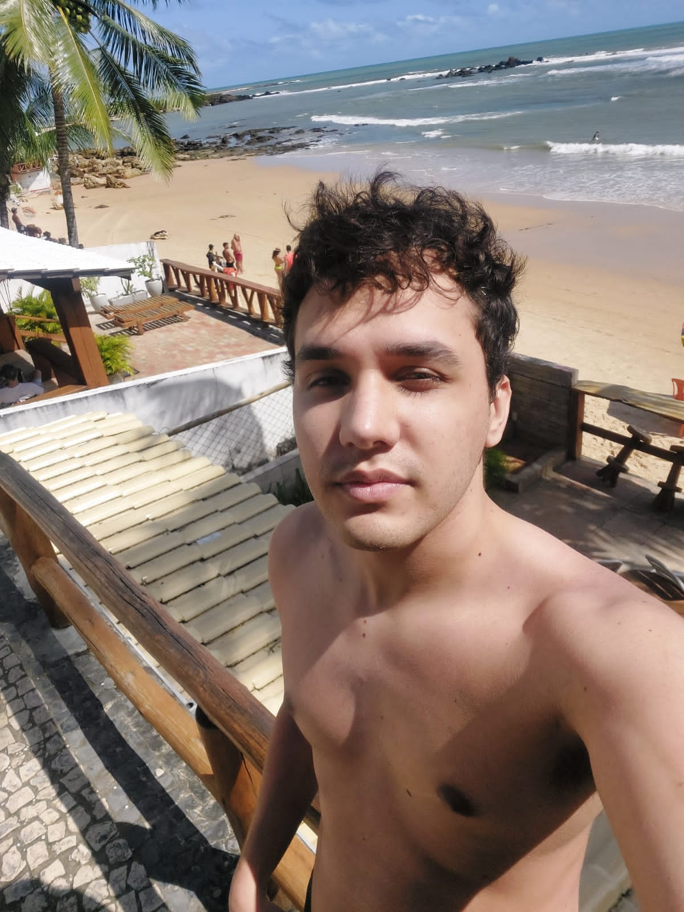
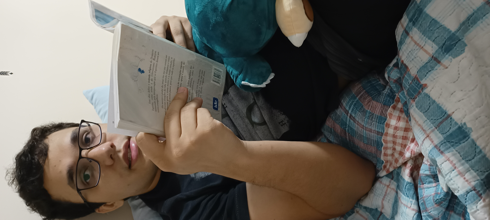

www.famososagora.com/exclusivo/homens-mais-bonitos-2025
FOFOCA DO DIA
EXCLUSIVO: Eleito o homem mais bonito do mundo — e ele ocupa TODAS as posições
Ranking internacional vira assunto do dia e provoca suspiros (e inveja) nas redes
Por Redação Famosos Agora · Dezembro de 2025
André Madureira em registro recente que deixou fãs e leitores sem fôlego


O que era para ser apenas mais um ranking anual de beleza masculina acabou se transformando
em um verdadeiro acontecimento midiático. Pela primeira vez, um único homem dominou
completamente todas as posições do Top 10.
De acordo com especialistas em estética, carisma e presença social, André Madureira
apresenta uma combinação considerada “desleal” para qualquer concorrente:
beleza marcante, charme natural, elegância espontânea e uma energia que chama atenção
em qualquer ambiente.
“Ele não é apenas bonito. Ele sabe que é bonito — e isso faz toda a diferença.”
💬 Declaração que viralizou:
“Eu tenho sorte de ter um namorado tão gostoso. Além de lindo, é carinhoso,
inteligente, elegante e faz qualquer ranking perder o sentido.”
Fontes próximas afirmam que, além da aparência, André se destaca pelo cuidado,
pela atenção aos detalhes e por um magnetismo que vai muito além da estética.
“É o tipo de beleza que permanece”, comentou um avaliador.
O ranking completo
1º lugar: André Madureira — beleza absoluta e unanimidade.
2º lugar: André Madureira — charme que desarma qualquer defesa.
3º lugar: André Madureira — sorriso, postura e presença marcante.
4º lugar: André Madureira — bonito, confiante e irresistível.
5º lugar: André Madureira — elegância natural e olhar envolvente.
6º lugar: André Madureira — aquele tipo de bonito que chama atenção sem esforço.
7º lugar: André Madureira — gostoso, estiloso e carismático.
8º lugar: André Madureira — favoritismo absoluto do público.
9º lugar: André Madureira — unanimidade entre leitores.
10º lugar: André Madureira — encerrando com chave de ouro.